Intro to the Ohio Supercomputer Center (OSC)
1 The Ohio Supercomputer Center (OSC)
The Ohio Supercomputer Center is a resource provided by the State of Ohio (not The Ohio State University), so it’s available for use by any person/entity in Ohio including anyone at OSU. Further, academic folks like us are able to use it at heavily subsidized (=cheap!) rates. Physically, it’s located in Columbus - not on campus, but close by.
We’ll get you introduced to OSC in this session, and of course, you’ll get experience working with OSC resources as we go though the workshop, but we can’t cover everything here. The good news though is that OSC has lots of good support/training materials online. You can find them at the OSC website.
<<<<<<< HEAD =======  >>>>>>> 98969bc998e763691cec1be642d5e20ecf001ee7
>>>>>>> 98969bc998e763691cec1be642d5e20ecf001ee7
2 What is a supercomputer?
We’ll start with the basics here - for our purposes, a supercomputer is basically a bunch of smaller computers connected together, allowing for computing jobs that require more resources than any one of the individual computers can alone provide.
3 Some Terminology
There are some terms that you’ll almost certainly hear (and maybe have used before yourself) when working with a supercomputer - either at OSC or elsewhere. Let’s think about how these terms relate to each other…
- Supercomputer
- Node
- Cluster
- Core
- Processor

There’s flexibility when using a supercomputer at OSC - the smallest job you can run would use a single processor, or core. Or you could run a slightly bigger job that uses say 10 cores that are all within one physical node. Or you could run an even bigger job that uses 100 cores that exist across 4 nodes by connecting those nodes together so their resources are shared (no single node at OSC has 100 cores).
4 The Structure Of A Supercomputer
We’re going to think about a supercomputer has having three main parts…
- Login Node(s)
- Compute Nodes
- File Storage System
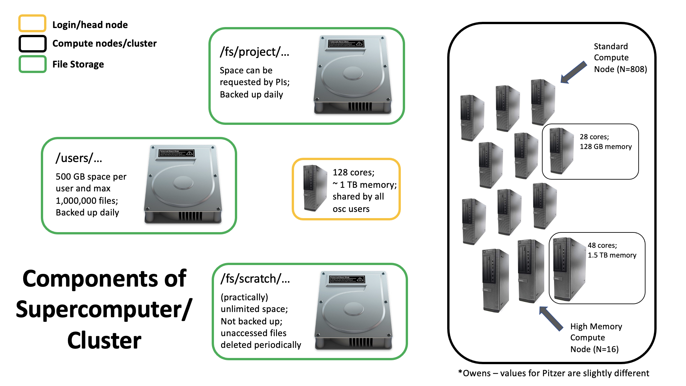
4.1 File Storage
There are 3 main areas/file systems where you can store files at OSC…
- Home Directories: /users/
- Project Directories: /fs/project/ OR /fs/ess/project/
- Scratch Directories: /fs/scratch/ OR /fs/ess/scratch/
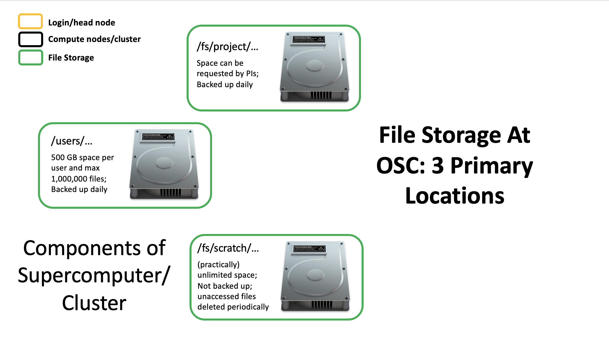
4.1.1 Home Directory
When you initially get an account with OSC, a HOME directory is created for you, named with your OSC username. This directory will always be within /users/. What subfolder it exists in depends on what project you were initially associated with. For example, the first project I was associated with at OSC was PAS0656. I don’t work on that project anymore, but the location of my HOME directory remains /users/PAS0656/osu6672 (note osu6672 is my OSC username).
This HOME directory provides you with up to 500 GB of storage (or up to 1,000,000 files). This is considered permanent storage, so it is well backed-up.
4.1.2 Project Directories
Project directories can’t be set up by just anyone, as the storage there has to be paid for. Typically, here at the University, Project directories are set up by PI’s. Project directories offer flexibility in terms of the amount of storage available (requested at the time of set-up, and then easily adjustable after that), and also in terms of who can access files in the directory.
Unlike your HOME directory, where typically only you will have access to the files it contains, Projects are meant to be available to a specified group of people - say the members of a lab all working on a project. Like HOME directories, these are also backed up routinely. Project directories are located inside either /fs/project/ or /fs/ess/.
4.1.3 Scratch Storage
The Scratch file system is meant to provide temporary storage space. Every Project directory has a corresponding Scratch directory. One advantage to Scratch space is that it is effectively unlimited. However, it’s not backed up, and files that are unmodified for a specific amount of time are automatically deleted.
4.2 Login Nodes
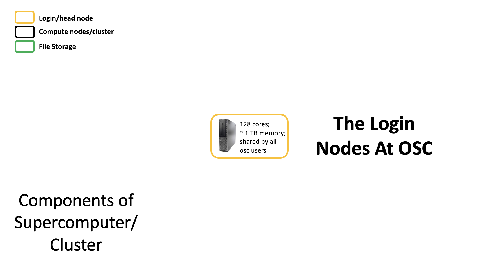
Login nodes are set aside as an initial landing spot for everyone who logs in to a supercomputer. These are meant to be used to do things like organize your files, create scripts that specify future compute jobs, etc.
They are NOT meant for doing any serious computing on. Resources on the login nodes are limited and shared by everyone who logs in. Attempting large computing efforts on these nodes risks taxing the resources (i.e. RAM) and bogging things down for everyone. There are checks built in that limit what you are able to do on the login nodes (i.e. jobs running for longer than 20 min will be killed), but it’s best to just not push it at all. Any bigger computing jobs are better sent to the compute cluster.
4.3 Compute Cluster
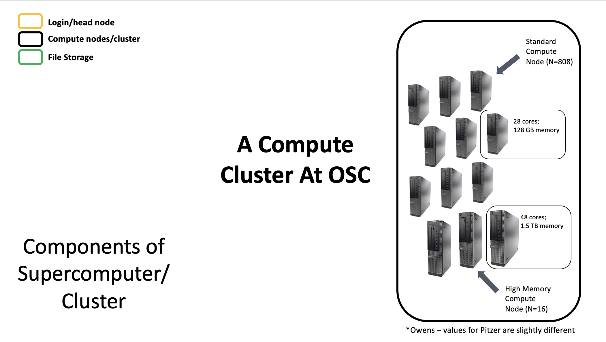
The compute cluster is really the powerhouse of the supercomputer, and is where you run your compute jobs. The details in terms of the size of the compute cluster itself, and the sizes of individual nodes contributing to the cluster (i.e. number of cores available on each node, amount of RAM available, etc) depends on which supercomputer you’re connected to, but regardless, you’ll have access to much more computing power than you’ll get on your local system.
Each time you send a compute job to the compute cluster, you also make a request for the number of resources the job will need - specifically, the number of nodes, cores, and how long the job will run. As there are jobs being sent by different users all the time, there is software called a job scheduler that considers each request and assigns the necessary resources to the job as they are available. We’ll talk about that more later in the workshop.
All these parts are connected together to create a supercomputer…
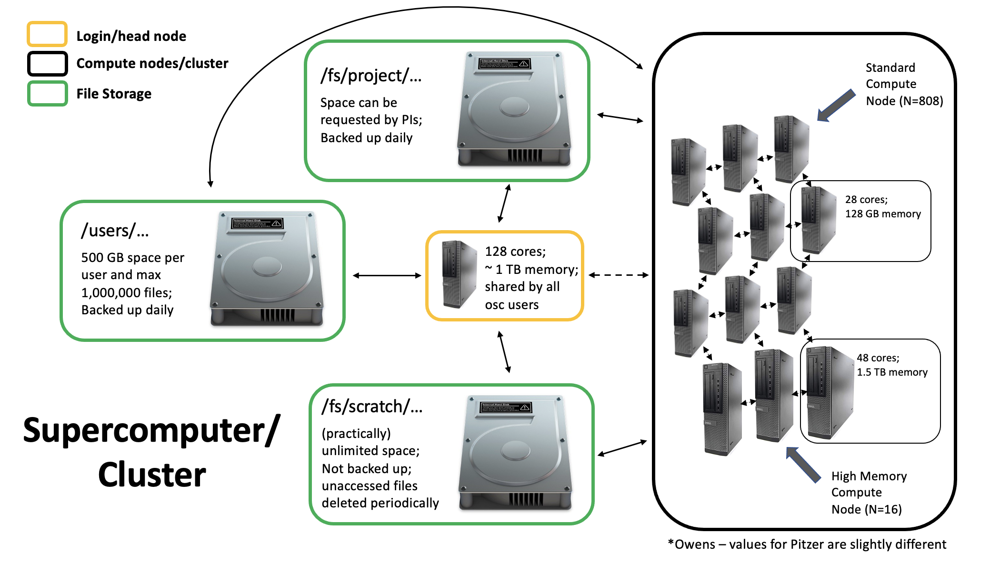
5 Supercomputers at OSC
OSC technially has 3 separate supercomputers…
- Ruby
- Owens
- Pitzer
Ruby is reserved for specific uses, so the two you’ll interact with are Owens and Pitzer. This is what Owens looks like (and Pitzer is similar)…

6 Connecting to a Supercomputer
Whether you’re working on a supercomputer at OSC or elsewhere, you’ll connect to it via a connection between your personal computer and the remote computer. Sometimes this connection is a one-way connection, in which you’re working exclusively on the remote computer, and in other cases it can be a two-way connection. The two-way connection scenario allows you to transfer files between your local computer and the remote system (supercomputer).
6.1 ssh
A one-way connection that allows you to connect to and work on a remote supercomputer is usually achieved through secure shell - often abbreviated and referred to as ssh.
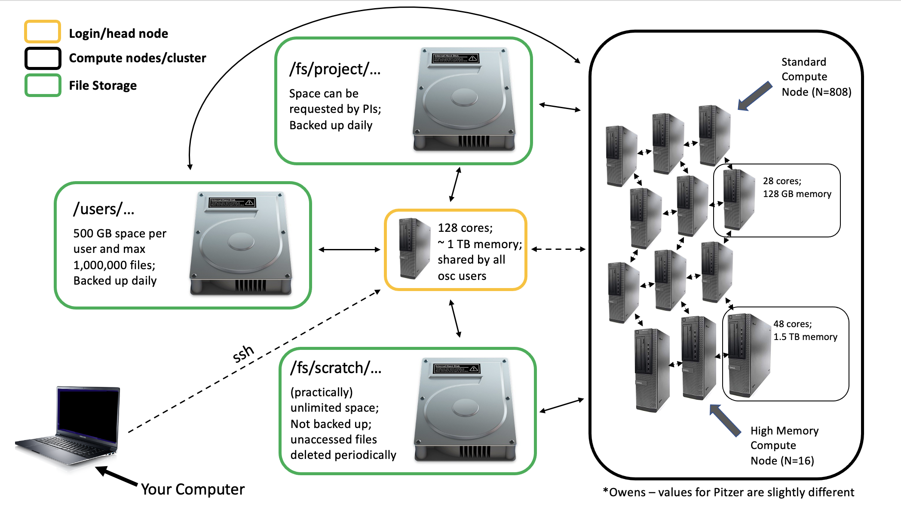
The two most common ways of connecting to OSC by way of ssh are though a Terminal or the OnDemand system.
6.1.1 Terminal
Traditionally if you’re on a Unix-based system (Mac or Linux), you can open the Terminal application and connect through ssh with something like this…
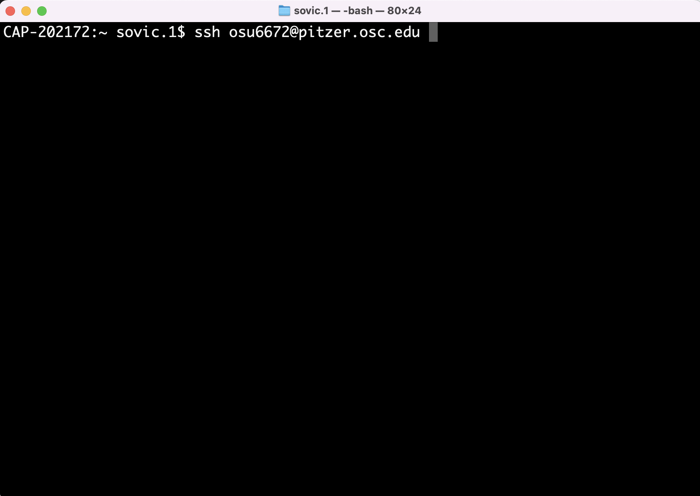
Unfortunately, while this can also be done on a Windows-based system, it requires an extra piece of software (an ssh client - typically one called putty), as the ssh command isn’t available by default in Windows like it is on Unix-based systems.
The good news for us is that OSC provides an alternative way to interact with their supercomputers: the OnDemand system.
6.1.2 OnDemand
OnDemand allows you to access OSC resources through a web browser - it not only provides ssh access, but other forms of access too, including the ability to upload and download files between the remote and local computer. The OSC OnDemand starting point can be accessed at https://ondemand.osc.edu. After logging in, you should see a page similar to the one below:
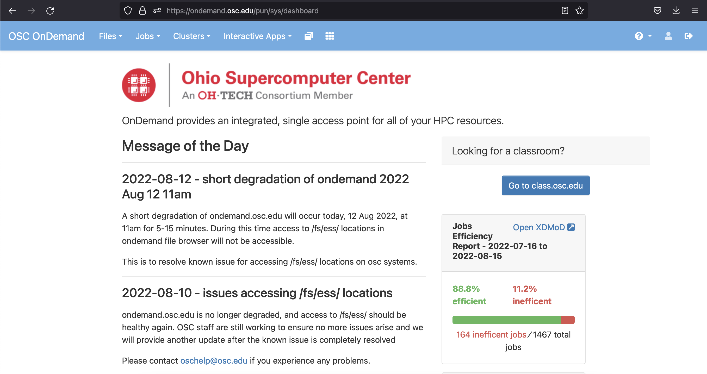
We’re going to focus on some of the options in the blue bar along the top. Let’s start with Files. Hovering over this gives a list of directories you have access to. If you’re account is new, you might only have one or two. I’m associated with quite a few different projects, so I have a bunch. I’ll select my HOME directory.
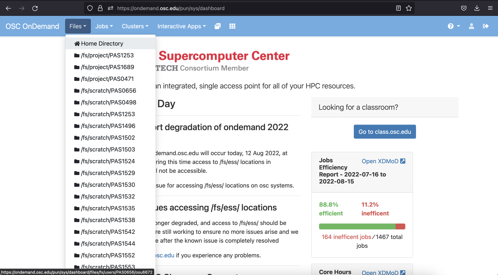
Here I can see a list of directories and files that are in my HOME directory.
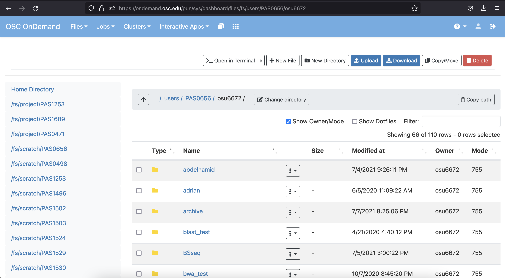
There are also a series of useful buttons across the top. One note about the Upload/Download buttons here - these are great in many cases, but likely won’t be a good option for especially large files. Other options, such as Globus, are available for these (more info on Globus here).
More generally, this general interface is somewhat unique at OSC. Not all supercomputers will have this convenient GUI interface (the OnDemand system) that allows you to perform tasks like creating new folders, moving files, etc. in a point-and-click manner.
Having these is certainly nice, but they only go so far. Using a supercomputer effectively is likely to require interacting with the system through a command line approach as opposed to a point-and-click interface. One option available for doing that is under the Clusters option in the blue top bar:
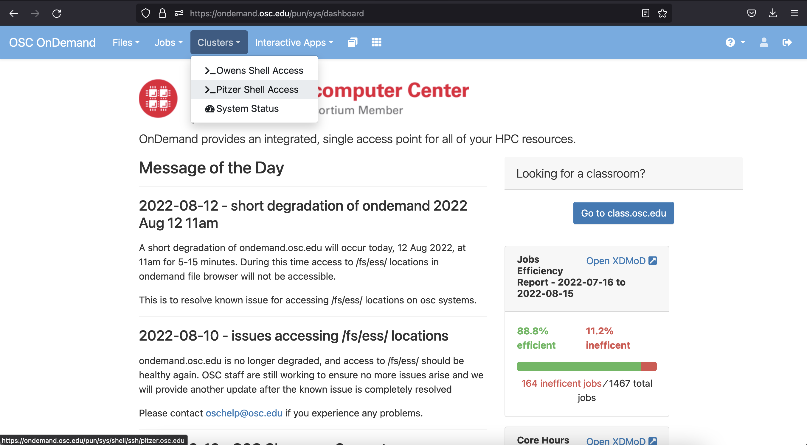
Here I’m selecting shell access to the Pitzer supercomputer, which will open a new browser tab looking like this:
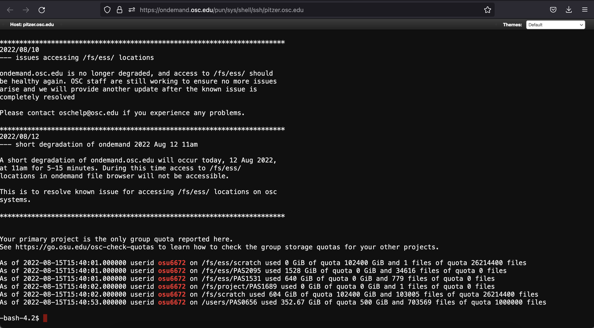
This shell system works just like the Terminal program we briefly came across earlier. Basically, there’s a prompt (at the bottom of the image above) where you can enter a command for the supercomputer to execute. This is a common way to interact with the supercomputer.
However, we’re going to check out one more option - a program called VS Code, which gives us the same basic shell access, but also includes some additional features that we might find useful later on. We can access VS Code by selecting Code Server under the Interactive Apps option on the OnDemand homepage (near the bottom of the list).
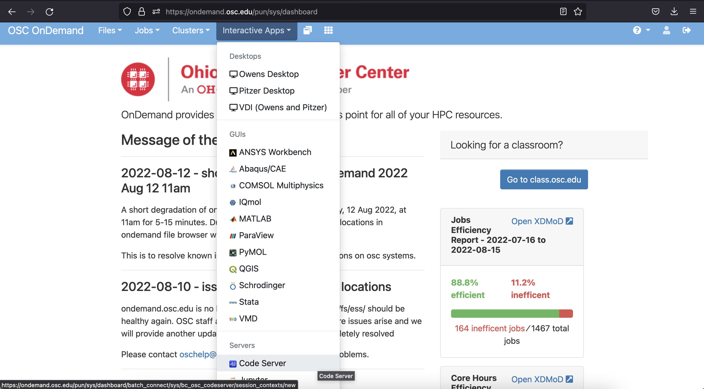
In this case, we need to provide a maximum time to keep the App open. The default is 6 hours. That will be fine for our purposes - you could even go a bit less, but remember that if you select 2 hours, you’ll be kicked off at the 2-hour mark, so usually better to err on the side of overestimating here.
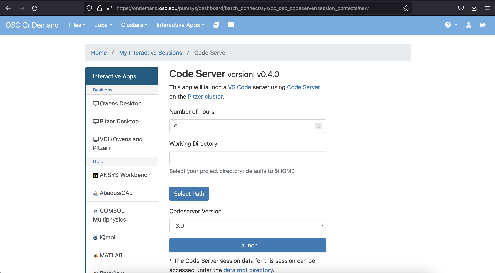
Click on Launch at the bottom and this will send your request to run the App for a maximum of the number of hours you chose. Once it’s ready, you’ll get a screen that looks like…
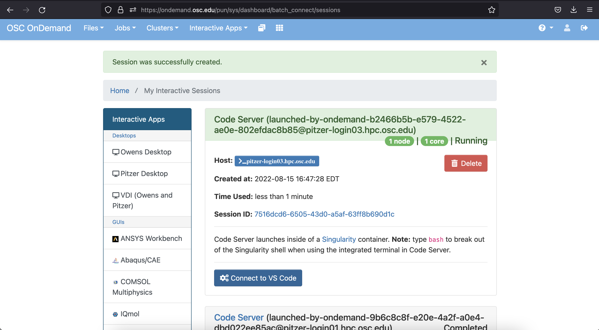
When it’s available, click on the blue Connect to VS Code button and you should see the following Welcome screen…
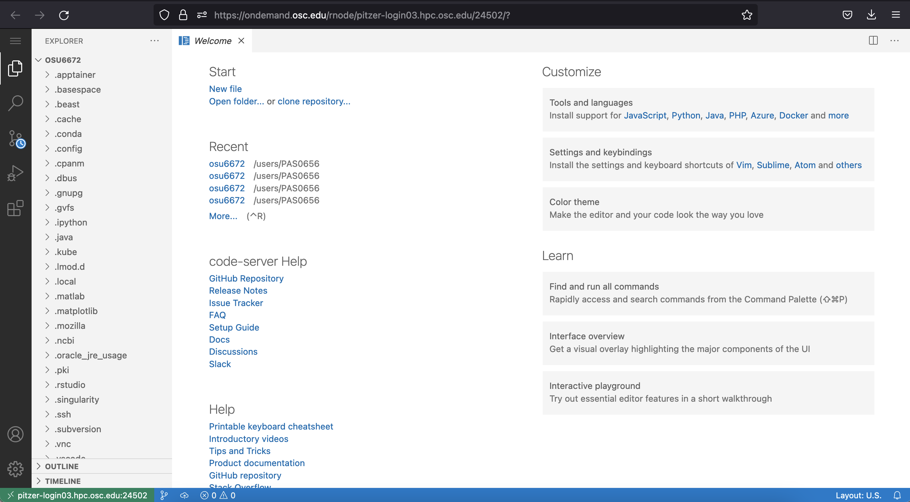
Jelmer will talk about VS Code in the next section.